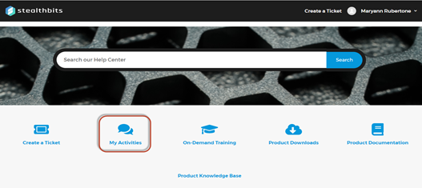
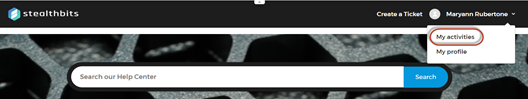

The Stealthbits Support portal allows customers to view their existing support requests. There are two ways to access your existing support requests:
- From the home page: Click My Activities.

- From any page: Click the drop-down in the top right corner of the header and go to My Activities.

Both options will bring you to a page that allows you to view the support tickets that you have either requested or are following.